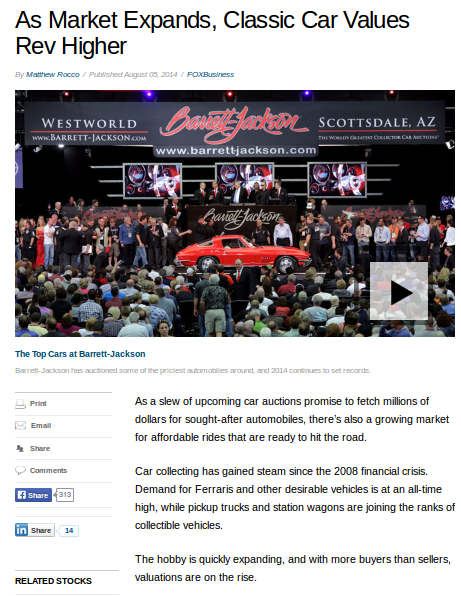
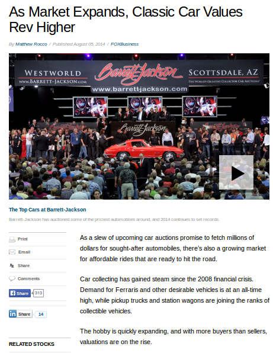
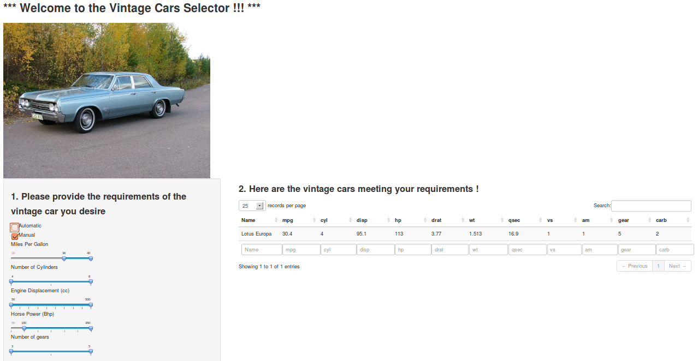
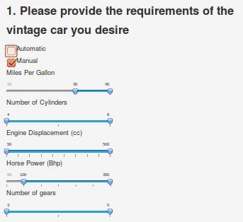
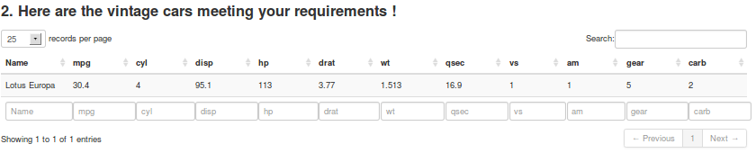

- Maybe a good time to start a vintage cars business
- Have built an App for this based on
mtcarsdataset http://www.foxbusiness.com/industries/2014/08/05/as-market-expands-classic-car-values-rev-higher/ 
Vaidy Subramanian
mtcars dataset
http://www.foxbusiness.com/industries/2014/08/05/as-market-expands-classic-car-values-rev-higher/
This is what the App looks like (Image courtesy http://www.anythingaboutcars.com/1960s-cars.html)

 
mtcars satisfying the criteria and displays it as a table along with the car name(s)data(mtcars)
chkauto <- 0; chkman <- 1; mpgrange <- c(30,40);
cylrange <- c(4,8); disprange <- c(50,500); hprange <- c(100,250); gearrange <- c(4,8);
mtcars[ ( (mtcars$mpg >= mpgrange[[1]]) & (mtcars$mpg <= mpgrange[[2]]) &
(mtcars$cyl >= cylrange[[1]]) & (mtcars$cyl <= cylrange[[2]]) &
(mtcars$disp >= disprange[[1]]) & (mtcars$disp <= disprange[[2]]) &
(mtcars$hp >= hprange[[1]]) & (mtcars$hp <= hprange[[2]]) &
(mtcars$gear >= gearrange[[1]]) & (mtcars$gear <= gearrange[[2]]) &
(chkauto*(mtcars$am == !(chkauto)) | chkman*(mtcars$am == chkman)) ), ]
## mpg cyl disp hp drat wt qsec vs am gear carb
## Lotus Europa 30.4 4 95.1 113 3.77 1.513 16.9 1 1 5 2